Düzgün biçimli kulaklar mutlu çocukluğun belirtisidir. Biçimsiz ve solgun kulaklar .ise bunun tersini gösterir. Aşırı büyük ve aşırı küçük kulaklar kişilik yetersizliğidir.
Kulakların yerleşimi: Kulağın üst sınırı kaşlardan yukarı-daysa yüksek entelekt; kaşlarla göz arasındaysa orta üzeri entelekt, gözlerden aşağıdaysa düşük entelekt belirtisidir.
Kulak memesinin düzgün biçimli olmaması dengesiz kişilik anlamına gelmektedir. Kulak memelerinin uzun olması kaygısızlık, az belirgin olması titizlik, çok büyük olması bilgelik belirtisidir.
Kulak memesinin hafiften ileri çıkması içtenlik, iç kulak kavsinin gerilmiş
olması kendine hakim olabilme, iç kulak kavsinin öne çıkması ise kendini kontrol edememe belirtisidir.
Pembe renkli kulak: Sağlıklı olma, kulak içinde benlerin olması ise hastalık belirtisidir.
6. Yüz kemikleri ve çene
Kaş üzerindeki kavislerin yüksek ve kabarık olması iradeli ve güçlü olma, yüz hatlarının az belirgin olması iradesizlik ve güçsüzlük belirtisidir. Kemikli ve büyük çene güçlü karakter, sarkık alt çene ise psikolojik sorunların göstergesidir.
Çene hatlarının az belirgin olması yumuşak başlılık, bu tip bir çenenin hafiften ikiye ayrılması ihtiras gücü, aşın ölçüde ikiye ayrılması ise yalnızlığa meyillilik; enli şakaklar kurnazlık; büyük çene ihtiraslara hakim olabilme, bazen ise aşırı kendini beğenmişlik göstergesidir.
Enli ve kabarık alın zekilik ve bilgelik; enli ve düz alın yetenekli olma; ensiz alın içine kapanıklık ve somurtkanlık, böyle bir alının düz olması ise aptallık göstergesidir.
__________________________________________________________________
© WWW.MAXIMUMBILGI.COM
Araştırma Serisi No.13 Yüz Okuma Sanatı
¯¯¯¯¯¯¯¯¯¯¯¯¯¯¯¯¯¯¯¯¯¯¯¯¯¯¯¯¯¯¯¯¯¯ ¯¯¯¯¯¯¯¯¯¯¯¯¯¯¯¯¯¯¯¯¯¯¯¯¯¯¯¯¯¯¯¯¯¯
35
7. BÖLÜM
YÜZ YAPISI VE GÖRSEL HAFIZA
Görsel hafıza yeteneği kişilere göre değişmektedir. Şöyle ki, insanın bir kişiyi tanıması için onu birkaç defa görmesi gerekmektedir. Bazıları yakından tanıdığı birisini iki-üç sene görmeyince çok kolay bir şekilde unutabiliyor. Diğer taraftan, bazı insanlar görüştükleri kişilerin yüzünü çok kolaylıkla hatırlarlar.
Muhtemelen, bu tür insanların ilk görüşte aldıkları izlenim kalıcı bir şekilde hafızalarında yaşıyor. Bu yetenekler genelde, dedektiflerde, otelcilerde vs.
gelişmiştir. Bu kişiler, meslekleri icabı çok sayıda kişiyle görüşmek durumundadırlar. Dolayısıyla, görüştükleri kişileri hatırlamak ve tanımak ihtiyacı doğuyor. Bu, önemli bir artıdır. Çünkü, görüştüğünüz şahsı ilk görüşte tanırsanız, o kendini size daha yakın hissedecektir. Aksi durumda, yani görüştüğünüz şahısları tanıyamadığınızda, onlarda size karşı bir kırgınlık hissi uyandırabilir ve hatta onları size karşı saygısız davranmaya zorlayabilir.
Bu yeteneğin iyi gelişememesi kişinin, karşılaştığı insanların dış görünüşünü algılayan görsel zekasını yeterince kullanmamasından kaynaklanmaktadır. Bu tip şahıslar çevresindekilere bakıyor, fakat görmüyorlar. Karşılaştığı kişiler onları ilgilendirmiyor ve bu yüzden gereken dikkati göstermiyorlar. Zayıf ilgi zayıf dikkati, zayıf dikkat ise zayıf hafızayı doğuruyor. Bu bir kuraldır.
Kendisinin hafıza yeteneğini geliştirmek isteyen birisi, baktığı yüzü incelemeli, ona büyük dikkat göstermelidir. Böylece, tüm dikkat, baktığı kişinin dış
görünümü üzerine odaklanacaktır.
Bu kişilere, insanların yüz yapılarını inceleme yeteneklerini geliştirmeleri için fizyognomi ile ilgili belli bilgilere sahip olmaları önerilebilir. Fizyognomi, onların bu konudaki yeteneklerini geliştirmeleri için büyük avantaj sağlayacaktır.
insanların yüzlerini hatırlayabilirle yeteneğinizi geliştirebilmek için, gördüğünüz her kişinin fizyognomik özelliklerini (başın ve yüzün genel yapısı, burun, ağız, gözler, kulaklar) incelemeniz gerekmektedir. Ayrıca, bu sırada devamlı şekilde
"ben sizi bir daha yeniden gördüğüm zaman tanıyacağım" gibi bir düşünce içinde olmamız gerekiyor. Bu düşünce açık ve ayrıntılı izlenim konusunda irademizi kuvvetlendirecektir.
Böyle bir şeyle ilgilenmemiz, ayrıca insanların yüz yapılarını dikkatle incelememiz, sarf ettiğimiz çaba ve zaman karşılığında bir artı sağlayacaktır. Bu arada, bir taraftan hafızamızı geliştirirken, diğer taraftan da fizyognomi alanında belli bilgiler edinmiş olacağız.
Çok az sayıda insan, uzun süre görmediği bir tanıdığını iyi bir şekilde hatırlayabilir. Dolayısıyla insanlar, aslında yakından tanıdıkları kişilerin dış
görünüşünü tanımlamaya çalışırken çoğu zaman komik duruma düşerler. Bu konuda kendinize bir test uygulayın.
__________________________________________________________________
© WWW.MAXIMUMBILGI.COM
Araştırma Serisi No.13 Yüz Okuma Sanatı
¯¯¯¯¯¯¯¯¯¯¯¯¯¯¯¯¯¯¯¯¯¯¯¯¯¯¯¯¯¯¯¯¯¯ ¯¯¯¯¯¯¯¯¯¯¯¯¯¯¯¯¯¯¯¯¯¯¯¯¯¯¯¯¯¯¯¯¯¯
36
Sonuçta, gördüğünüz zaman kolaylıkla hatırlayacağınız birisi tasvir etmeye kalkıştığınızda çok az şey hatırladığınızın farkına varacaksınız.
İlk gördüğünüz kişiye dikkatlice bakın ve alnının yüksek veya kısa, geniş veya ensiz olmasına; kaşlarının düz veya kavis şekilli olmasına ve rengine; burnunun tipine (gaga burun, Roma tipli, Yunan tipli, kalkık burun vs.); ağzının büyük veya küçük olmasına, dişlerinin durumuna ve büyüklüğüne; bıyık veya sakalının olup olmamasına (eğer varsa uzun ve kısalığına) dikkat gösterin. Bu gözlemlerinizi karşılaştığınız tüm insanlar üzerinde uygulayın ve onun hakkında bir rapor sunacakmışsınız gibi (tüm kariyerinizin bu rapora bağlı olduğunu farz ederek) detaylara önem verin. Bu metodla incelenen yüz yapısı kolay kolay unutulmaz. Birkaç benzer egzersiz eksik olan yeteneklerinizin geliştirilmesi açısından çok faydalı olacaktır. Siz yüz hatlarını ayırmayı öğrenecek ve merak duyduğunuz için net bir şekilde hatırlayabileceksiniz.
Daha sonra hayalinizde, karşılaştığınız kişilerin resimlerini çizmeye çalışarak onları hatırlamaya çalışın. Karşılaştığınız kişilerin hayali resmini beyninizde canlandırma tekniğini benimseyerek, uzun süre sonra bile, daha önce karşılaştığınız kişileri kolaylıkla tanıyabileceksiniz. Hayali resmin beyinde tekrar tekrar canlandırılması kişiyi tekrar görmekle eşanlamlıdır. Muhtemelen, bir fotoğrafı veya portreyi hatırlamanın ve hayali resmini canlandırmanın çok kolay olduğunun, buna karşılık gerçek hayatta gördüğünüz bir kişiyi hatırlamanın ne kadar zor olduğunun farkına varmışsınızdır. Halbuki, işin esprisi alışkanlıklarda yatmaktadır. Şöyle ki, birkaç egzersiz sonucunda canlı insanları da portreleri kadar kolay hatırlamayı öğreneceksiniz.
__________________________________________________________________
© WWW.MAXIMUMBILGI.COM
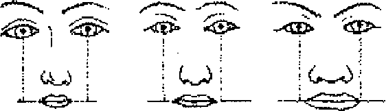
Araştırma Serisi No.13 Yüz Okuma Sanatı
¯¯¯¯¯¯¯¯¯¯¯¯¯¯¯¯¯¯¯¯¯¯¯¯¯¯¯¯¯¯¯¯¯¯ ¯¯¯¯¯¯¯¯¯¯¯¯¯¯¯¯¯¯¯¯¯¯¯¯¯¯¯¯¯¯¯¯¯¯
37
8. BÖLÜM
AĞZIN BİLGİ İŞARETLERİ
Ağız, insan yüzünün en
belirgin uzvudur. Ağız
ölçüsünün (dudakların uzunu
ve eni) belirlenmesinde
kullanılan yöntem; göz
bebeklerinin merkezinden
dudakların kapanma hattına dikey indirilmesi şeklindedir. Genelde, erkeklerde ağzın büyüklüyü kadınlardakinden daha fazladır.
Fizyognomi, ağzın büyüklüğüne ve biçimine göre insanın iç enerjisini belirlememize olanak sağlar. Ağzın büyük ve ağız köşelerinin aşağıya doğru sarkmış olması kişinin iradeli ve dış baskılardan az etkilenen biri olduğunun göstergesidir. Bununla birlikte, ağız köşelerinin konumu ile ilgili düşünceler farklıdır. Örneğin, C. Darwin dudak köşelerinin aşağıya doğru sarkmasını ağlama eyleminin bir kalıntısı olduğunu söylemiştir. Gerçekte, insan ağlayacak bir duruma düştüğünde veya depresyondayken ağız köşeleri aşağıya doğru sarkar, insan gülüyor, şakalaşıyor olabilir ama, ağız köşelerinin aşağıya doğru sarkması onun keyfinin yerinde olmadığını ortaya koyar.
Diğer araştırmalar köşeleri hafiften aşağıya sarkmış kavis şekilli küçük ağzı hassaslığın, duygusallığın ve bilimsellikten uzak olmanın belirtisi olarak kabul etmektedirler. Ağız köşeleri yukarıya doğru sarkan kişiler ise açık kalpli, çalışkan ve üstün zekalı oluyorlar.
Küçük ağız zayıf irade ve yaşam mücadelesi kaygısının belirtisidir. Japonlar erkeklerin büyük, kadınların ise küçük ağızlı olmalarından hoşlanıyorlar.
Kadınının ağzının büyük olması erkeksi bir karaktere sahip olmasının belirtisidir. Bu da erkeklerin hoşuna gitmez.
Gözlemler sonucu dudakların bir birine fazla sıkılmış ve dişlerin bir birine yakın olmasının, kişinin ısrarcılığının, sıkı şekilde kapalı ağzın ise kararlılık ve çalışkanlığın göstergesi olduğu ortaya konulmuştur. Bunun aksine olarak ağzın, özellikle alt çenenin sarkması sonucu genişlenmesi insanın psikolojik faalliğinin azalması anlamına gelmektedir. Ağzın simetrik bir şekilde açılıp kapanması duyguların dengeliliğini göstermektedir. Ağzın bir tarafında dudakların daha fazla bir birine sıkılmış olması ve bu taraftaki köşenin aşağıya sarkmış olması yüz felci, dişlerin konumunun düzgün olmaması ve aksi karakterli insanlarda ortaya çıkmaktadır. Devamlı titreyen ağız ("at ağzı") sinirlilik belirtisidir.
Dudaklar üzerindeki kırışıklar yaşlanmanın en doğal belirtisidir. Ağzın köşelerine doğru inen kırışıkların olması kişinin zor bir hayat geçirdiğini gösterir.
__________________________________________________________________
© WWW.MAXIMUMBILGI.COM
Araştırma Serisi No.13 Yüz Okuma Sanatı
¯¯¯¯¯¯¯¯¯¯¯¯¯¯¯¯¯¯¯¯¯¯¯¯¯¯¯¯¯¯¯¯¯¯ ¯¯¯¯¯¯¯¯¯¯¯¯¯¯¯¯¯¯¯¯¯¯¯¯¯¯¯¯¯¯¯¯¯¯
38
Yukarıda söylenenleri özetlersek, ağzın büyük olmasının cesurluk ve yalancılık, küçük olmasının korkaklık ve ciddilik, dudakların bir birine sıkılmış olmasının iradelilik, dudakların gevşek olmasının ise aptallık belirtisi.olduğunu söyleyebiliriz. Bunun dışında, ağzın devamlı açık olması dimağ zayıflığı, kretenizm, ayrıca burunla solunumun zorlaştığı ağız iltihaplanması durumlarında gözlemlenmektedir.
Fizyognomide dudakların ölçüsü, şekli ve rengine büyük önem verilmektedir.
Şekilden de görüldüğü gibi, dudakların ölçü ve biçimleri farklılık arz etmektedir.
Maalesef, M.M. Gerasimov, dudakların sınıflandırırken, sadece anatomik biçimlerle yetinmektedir. Oysa dudaklar, psikoloji ve hastalık bağlamında ele alınarak incelenmelidir.
Değişik fizyognomi okulları, dudakların anatomik biçimlerini psikoloji ve hastalık bağlamında ele almaktadırlar. Bu okullardan birine göre, kalın ve büyük dudaklar alaycılık ve hazırcevaplılık, ince ve küçük dudaklar yalancılık ve sinsilik, üst dudağın kalın olması adaletsizlik, alt dudağın uzun olması ise şıpsevdilik ve zeka belirtisidir. Belirgin dudak memesine sahip dudaklar kararlılık ve aktiflik, gerilmiş dudaklar ise saflık ve işlerin kötüye gittiğinin göstergesidir.
Diğer bir fizyognomi okuluna göre ise, özellikle kadınlarda 7 dudak türü mevcuttur.
a) Papyon şekilli dudaklar en kadınsı olanıdır. Bu tür dudaklar çekicilik, rüküşlük, hassaslık ve aynı zamanda samimiyetsizlik ve yalancılık belirtisidir. Bu tür dudaklar erkeklerde şöhret tutkusu ve ciddiyetsizlik anlamına gelmektedir.
b) Islak dudaklar çabuk arkadaş edinebilen, her türlü ortama çabuk uyum sağlayan, enerjikliği ve hassaslığı ile seçilen hareketli, konuşkan, açık sözlü insanlarda görülmektedir.
c) Zarif ve ince küçük dudaklar alçak gönüllülük, zeka, samimilik ve ciddilik belirtisidir.
d) Donuk, fakat çekici ve ince dudaklar ihtiraslı, çok zarif, fakat bazen kendine aşırı hakim bir yapının göstergesidir. Bu tür insanlarda bağlanma duygusu zayıftır. Onlar her konuda kendi fikirlerini söylerler ve kıvrak zekalıdırlar. Aşırı ince dudaklar, kendilerinden her türlü kötülük beklenen kaba insanlara özgüdür.
e) Harmonik dudaklar ince biçimli, hafiften ironili dudaklardır. Bu tip dudaklar genelde gerçeklikle duygusallığı bağdaştırabilen şair ruhlu ve yüksek entelektli kadınlarda görülmektedir.
f)
Asimetrik dudaklar. Üst dudağın büyük olması duygusal davranmama, akılcı düşünme ve egemen olma isteğinin belirtisidir. Bu durumda, ayrıca alt dudağın büzülmüş olması erkeklerde iktidarsızlık, kadınlarda ise cinsel isteksizlik alametidir.
__________________________________________________________________
© WWW.MAXIMUMBILGI.COM
Araştırma Serisi No.13 Yüz Okuma Sanatı
¯¯¯¯¯¯¯¯¯¯¯¯¯¯¯¯¯¯¯¯¯¯¯¯¯¯¯¯¯¯¯¯¯¯ ¯¯¯¯¯¯¯¯¯¯¯¯¯¯¯¯¯¯¯¯¯¯¯¯¯¯¯¯¯¯¯¯¯¯
39
g) Kalın (şişkin) dudaklar hem hassaslık, hem de iradelilik belirtisidir. Bu tiplerin belirgin özelliği, kendilerini çok iyi kontrol etmeleri, aşırı soğukkanlılık ve zevklere düşkün olmalarıdır.
Fransız doktor Michael Renault, dudak semptomlarının kriminolojide kullanılmasını önermiştir. Ona göre, dudak izleri parmak izlerinden fazla önem taşır. Nitekim, dudak yüzeyi daha özgün bir yapıya sahiptir. Birkaç bin deney üzerinde yaptığı gözlemler sonucu Renault, bir ikiz çift dışında bir birinin aynısı olan hiçbir iki dudak izine rastlamamıştır. Dedektiflerin fikrince, Renault'nun yöntemi ellerin hasar görmesi durumunda kaza ve cinayet kurbanlarının ayırt edilmesinde çok faydalı olabilir.
Ağız biçimine, dahası öpüşme anındaki dudak şekline bakarak partnerin karakterini öğrenmek mümkündür. Öpüşme anındaki "dudak geometrisi" ciddi bilimsel araştırma açısından eşsiz bir malzemedir. Daha 20. yüzyılın başlarında öpüşme tarzının ortaya çıkarılmasına dayanan test tertip olunmuştur. Bu testte deneyden, dudaklarını rujla boyayarak sevgilisinin dudağı ve yanağı yerine beyaz bir kağıdı "öpmesi" isteniyor. Bu tür "öpüşme" iziyle kişilerin karakterinin ve karşı t~.«ı-fa olan hislerinin belirlenmesi mümkündür.
a) Düzgün çember şekilli iz: Partner tam güveni hak ediyor.
b) Deforme olmuş çember şekilli iz: Duygular ciddi değil.
c) Hilal şekilli iz: Partner samimidir, fakat bu, tam garanti anlamına gelmez.
d) Deforme olmuş hilal şekilli iz: ihtiraslı anlarda verilen sözler tutulacaktır.
e) Düzgün yatay hat şeklinde iz: Partner iyi kalpli birisidir.
f) Parçalanmış karo şekilli iz: Partner sado-mazoşisttir.
g) Deforme olmuş dikey hat şeklinde iz: Korkak bir partner.
h) Düzgün zikzak şekilli iz: Partneriniz sizden nefret ediyor.
Teşhis koyma zamanı dudakların rengi de büyük önem taşımaktadır. Rengi neredeyse yüz derisiyle aynı olan solgun dudaklar, çoklu kan kaybından sonra ortaya çıkan anaemia (kansızlık) hastalığının belirtisidir. Siyanoz dudaklara kalp ve akciğer hastalarında rastlanmaktadır. Kuru, çatlamış ve kabuk bağlamış
dudaklar ağır enfeksiyon hastalığın belirtisidir. Kırışmış, köşeleri siyahlaşmış
dudak ve dili olan ağız devamlı açık-tıksa ve seyrek nefes hareketleri, yaklaşan ölümün belirtisidir.
__________________________________________________________________
© WWW.MAXIMUMBILGI.COM
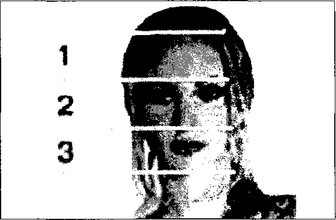
Araştırma Serisi No.13 Yüz Okuma Sanatı
¯¯¯¯¯¯¯¯¯¯¯¯¯¯¯¯¯¯¯¯¯¯¯¯¯¯¯¯¯¯¯¯¯¯ ¯¯¯¯¯¯¯¯¯¯¯¯¯¯¯¯¯¯¯¯¯¯¯¯¯¯¯¯¯¯¯¯¯¯
40
9. BÖLÜM
YÜZ YAPISINA GÖRE TEŞHİS
İnsan yüzü gerçekten kalbin aynasıdır.
Mimiklerin derin zenginliği, kan
dolaşımı sürecinin gözle görülebilmesi,
sinir uçlarının yakın olması, kısacası
temel duyu organlarının bu bölgede
toplanmış olması, yüze bakarak
vücuttaki tüm gelişmelere ilişkin fikir
söylememize olanak sağlar, insan
vücudundaki her türlü fiziksel ve
psikolojik patolojik gelişmeler bilinçaltı
aracılığıyla yüzdeki mimiklerin değişmesine neden oluyor.
Deneyimli doktorlar, yüz ifadesine göre insanın sağlık durumu, onun bağışıklık sistemi potansiyeli ve nihayet, karakter yapısı ve psikolojisi hakkında bilgi edinebiliyorlar. Rusya'nın ünlü iç hastalıkları uzmanı G.A. Zaharin, hastanın dış
görünüşüne bakarak neredeyse yüzde yüz teşhis koyabiliyordu. Bir zamanlar N.I. Pirogov, hatta "Hasta insanın Yüzü" haritasını çıkarmıştı.
O, her bir hastalığın insan yüzünde belli bir iz bıraktığını iddia ediyordu. Fakat, insanın yüz ifadesine göre teşhis koyma yöntemi Uzakdoğu ülkelerinde (özellikle Çin ve Kore) yaygın şekilde kullanılmıştır. Tibet tıp yöntemlerini bilen hiçbir deneyimli doktor hastanın yüzünü dikkatle incelemeden.teşhis koymaz. "Yüz okuma" sanatında kendi sistemini geliştirmiş birkaç ekol bulunuyor. Şöyle ki Japonlar, yüzü genelde 3 bölgeye ayırıyorlar:
¾ Üst (alın bölgesi): Bu bölge vücudun ve ruhun genel durumunu yansıtıyor.
¾ Orta (kaşlardan burnun ucuna kadar): Bu bölgeye bakarak insanın psikolojik durumunu görmek mümkündür.
¾ Aşağı (üst dudaktan çenenin altına kadar) Bu bölge insanın karakter yapısını yansıtıyor.
Deneyimli bir yüz okuma uzmanı yüz derisine, onun rengine, nemliliğine, damar ağının yerleşimine, kırışıkların yerleşimine ve derinliğine bakarak çok şey söyleyebilir. Bunların yanı sıra, "hayat çizgileri" olarak adlandırılan beş uzvun (kaşlar, gözler, burun, ağız ve kulaklar) durumu da dikkate alınır. Bu uzuvların orantılı olması (biçim, renk, temizlik vs.) iyi bir belirtidir. Bu uzuvların önemlilik derecesine dayanılarak, bazı alternatif tıp teşhis yöntemleri geleneksel yöntemlerle bir arada kullanılmaktadır. Bu yöntemler arasında göz irisine göre teşhis yöntemi, kulak kepçesine göre teşhis yöntemi, göz küresinin kılcal damar ağına göre teşhis yöntemi sayılabilir.
__________________________________________________________________
© WWW.MAXIMUMBILGI.COM
Araştırma Serisi No.13 Yüz Okuma Sanatı
¯¯¯¯¯¯¯¯¯¯¯¯¯¯¯¯¯¯¯¯¯¯¯¯¯¯¯¯¯¯¯¯¯¯ ¯¯¯¯¯¯¯¯¯¯¯¯¯¯¯¯¯¯¯¯¯¯¯¯¯¯¯¯¯¯¯¯¯¯
41
Beş "hayat çizgisinin" ve yüzün üç bölgesinin incelenmesi, yüz okuma sanatının temeli olarak kabul edilebilir. Bununla birlikte insanın karakter yapısı ve psikolojik durumu hakkında genel bir izlenim oluşturulabilmesi için yüz kemiklerinin özelliklerini, çene biçimini ve genel yüz yapısını dikkate almak gerekir. Son olarak, bu verilerin hastanın yaşı da dikkate alınarak değerlendirilmesi gerekir.
Hastalığımız Yüzümüzde Yazılmıştır
Bazı insanlar doğuştan yüze bakarak insanın "içinden geçenleri" okuma yeteneğine sahiptirler. Biz, bazen sokaktaki falcıların hızlı ve doğru şekilde ruh halimizi, hatta geçirdiğimiz hastalıkları bilmesini hayretle karşılıyoruz. Falcının ipuçları ise aslında, bizim yüzümüzdür. Ruh halinin belirlenmesini belli ölçüde anlayabiliriz. Çember, oval, kare, üçgen ve yamuk şekilli yüze sahip olan insanların karakter yapılarını belirlemek o kadar da zor değil. Bu yöntem eski zamanlardan beri bilinmektedir.
Peki, nasıl oluyor da yüz çizgilerine göre hastalıklara teşhis koymak mümkün oluyor? işin püf noktası her bir hastalığın da hastanın yüzünde kendine özgü silinmez izler bırakmasıdır. Örneğin, günümüzde yaygın olan kalp ve damar hastalıklarını ele alalım. Yüz çizgilerine göre enfarktüsü önceden haber vermek mümkündür. Bu hastalığın teşhisinin konulmasında en güvenilir belirti, çene ile alt dudak arasındaki bölgenin uyuşukluğa varacak kadar hissiyatı kaybetmesidir.
Biraz daha yukarı göz attığımızda, üst dudakla burun arasında kırışıklığın olması kalp kapaklarının yetmezliğinden haber verir. Kalp yetmezliğinin başlangıç belirtileri dudakların zaman zaman morarması şeklinde ortaya çıkıyor.
Böyle bir belirtinin görülmesi doktora başvurmak için ciddi bir nedendir. Kalp ve kan dolaşımı organları üzerindeki aşırı baskının en önemli belirtisi her iki tarafta burun ve üst dudak arasında derin ve uzun kırışıkların olmasıdır.
Burun köprüsünün ince olması kalp nevrozunun bir belirtisidir. Kılcal damarları belirgin tümsekli kırmızı burun, arter-yal kan basıncının yüksek olduğunu gösterir. Düşük kan basıncı ise genelde, burnun kımızımsı mor renk alması şeklinde kendini belirtir. Kalp hastalıklarının belirtisi kırmızımsı mor renk almış
burun kanatları, kan dolaşımı bozukluğunun belirtisi ise kulak kepçelerinin balmumu rengini almasıdır. Şakaklar da teşhis açısından önemli bir bölgedir. Bu bölgede deri altında uzun arteryal damarın belirgin olması ve yüzün zaman zaman kızarması arteryal kan basıncının hızlı ve keskin bir şekilde yükseldiğinin göstergesidir. Bu insanlarda hipertoni krizi olasılığı yüksektir.
Kalp sorunlarının diğer bir belirtisi de yanaklardır. Sol yanağın çökük olması kalp yetmezliği şüphesi doğurur. Genç yaşlarda kan dolaşımı bozukluğunun belirtisi saçların zamanından önce beyazlaşmasıdır. Boynun kısa olması kişinin kalp hastalıklarına yakalanma olasılığının yüksek olduğu gösterir. Boynu kısa olan insanlarda kalp sorunları dışında beyin damarlarının erken sertleşmesi __________________________________________________________________
© WWW.MAXIMUMBILGI.COM
Araştırma Serisi No.13 Yüz Okuma Sanatı
¯¯¯¯¯¯¯¯¯¯¯¯¯¯¯¯¯¯¯¯¯¯¯¯¯¯¯¯¯¯¯¯¯¯ ¯¯¯¯¯¯¯¯¯¯¯¯¯¯¯¯¯¯¯¯¯¯¯¯¯¯¯¯¯¯¯¯¯¯
42
riski de yüksektir. Sağlık sorunları konusunda yüzde bulunan bazı "kozmetik"
bozukluklar da ipucu verebilir.
Örneğin, gözlerin altının torbalaşması ve genelde yüzün şişkin olması böbrek ve kalkanbezi sorunlarının mevcut olduğunu gösterir. Gözler altında mor lekelerin aniden ortaya çıkması ve uzun süre kalması birçok hastalığın varlığından haber verir. Herkesin bildiği sivilceler ise hastalığın yüzümüzdeki "haritası"dır.
Onların yüzdeki yerlerine göre gerek cinsel hastalık, gerekse sindirim, sinir ve endokrin sistemi bozukluğu ve diğer bozukluk teşhisi koymak mümkündür.
Bunların yanı sıra, deneyimli bir doktor hastanın sağlık durumunu derisine (rengine, kuruluk derecesine vs.) bakarak değerlendirebilir.
Fotoğraflara Göre Teşhis Koyma
Bu gün fizyognomik veriler bir çok alanlarda olduğu gibi tıp alanında da uygulamaya konmuştur. Avrupa'lı uzmanların geliştirildiği genetik sendromları tanıyabilen yeni program bu alandaki uygulamaları daha da kolaylaştırmıştır.
Uzmanlara göre bilgisayar, hastanın yüz çizgilerini inceleyerek, deneyimsiz doktorlara teşhis yapmada yardımcı olabilir. Hastanın resmini kullanarak bilgisayar aracılığıyla Cornelia de Lange, Fragile X ve Williams-Beuren sendromu gibi nadir görülen hastalıklar belirlenebilmektedir.
Yeni program yüzü, 48 noktadan oluşmuş şema şeklinde sunmaktadır. Bilgisayar programı, bu noktaların konumlarını ve aralarındaki mesafeleri kıyaslayarak, veritabanından ilgili bilgileri tarayarak, hastalık patolojisini tanımlıyor.
İlk teknolojiler olayların %60'ında doğru teşhis koymuşlardır. Program üzerinde bazı düzeltmeler yapıldıktan sonra gözler, burun, ağız ve çene üzerinde daha çok inceleme yaparak, olumlu sonucu %76'ya ulaştırmışlar. Önceleri bu alanda uygulanmış metodlar daha az verimli olmuş, yüz parametrelerinin bir bütün olarak ele alınıp incelenmesine o kadar dikkat göstermemişlerdir.
Cornelia de Lange sendromundan eziyet çeken hastalarda benzer belirtiler bulunmaktadır. Bunlar zayıf gelişme, kısa boy, başta aşırı kalın saçlar, kollarda biçimsizlik ve kalp yetmezliği gibi belirtilerdir. Bu hastalarda ayrıca, burun üzerinde kavuşan ince kaşlar, uzun kirpikler, kısa ve kalkık uçlu burun gibi belirtiler de bulunmaktadır. Bu hastalık iç organlarda yetmezlik ve önemli ölçüde entelekt zedelenmesi gibi kötü sonuçlar doğuruyor.
Fragile X sendromu, çeşitli düzeylerde zihinsel özürlülüğe yol açabilen kalıtsal bir sağlık sorunudur. Hastalık, kadınlardan çok erkekleri etkilemektedir. Bu zihinsel sorunlar, hafif öğrenme güçlüklerinden, ağır zihinsel özürlülük ve davranış bozukluklarına kadar değişiklikler gösterebilir.
Williams-Beuren sendromu hastası, "cin yüzü" olarak adlandırılan çok belirgin bir yüze sahiptir. Bu yüzün özellikleri şöyledir: Kabarık alın, göz kapakları üzerinde kalın katlar, aşağıya doğru sarkmış yanaklar, şaşı gözler, kısa burun, __________________________________________________________________
© WWW.MAXIMUMBILGI.COM
Araştırma Serisi No.13 Yüz Okuma Sanatı
¯¯¯¯¯¯¯¯¯¯¯¯¯¯¯¯¯¯¯¯¯¯¯¯¯¯¯¯¯¯¯¯¯¯ ¯¯¯¯¯¯¯¯¯¯¯¯¯¯¯¯¯¯¯¯¯¯¯¯¯¯¯¯¯¯¯¯¯¯
43
bir o kadar dışarı eğilmiş burun delikleri, etli dudaklar, küçük çene, büyük, fakat düzgün bir şekilde yerleşmiş kulak kepçeleri. Bunun dışında, yüksek damaklar, kuru deri, aşırı hareketli eklemler ve diğer belirtiler oluyor.
Fragile X sendromu zamanı, genelde erkek çocuklarda aşırı büyük alın, yüzün asimetrik çizgileri, büyük çene, uzun ve ileriye çıkmış kulaklar gibi belirtiler görülmektedir. Bu hastalığa yakalanmış çocuklarda zihinsel gelişim birkaç defa düşük oluyor. Bu belirtiler çocukluk döneminde değil, büyüdükten sonra görülmeye başlar. Yeni metodu kullanarak bu hastalıkların belirtilerini öğrenerek daha erken yaşlarda teşhis koymak mümkün olacaktır.
Almanya'nın Essen kentinde üniversitenin Genetik Bilimler Enstitüsü'nün doktoru Dagmar, çeşitli hastalıklara sahip olan 55 kişinin fotoğrafı üzerinde Wieczorek bu programı kullanmıştır. Hastaların büyük çoğunluğuna doğru teşhis konulmuş, başarı oranı %76 olmuştur.
__________________________________________________________________
© WWW.MAXIMUMBILGI.COM
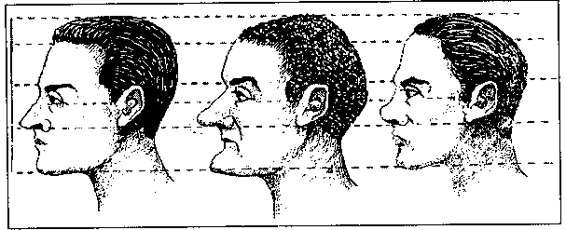
Araştırma Serisi No.13 Yüz Okuma Sanatı
¯¯¯¯¯¯¯¯¯¯¯¯¯¯¯¯¯¯¯¯¯¯¯¯¯¯¯¯¯¯¯¯¯¯ ¯¯¯¯¯¯¯¯¯¯¯¯¯¯¯¯¯¯¯¯¯¯¯¯¯¯¯¯¯¯¯¯¯¯
44
10. BÖLÜM
RESİMLERLE YÜZ YAPISI ÖRNEKLERİ
A. Yüz Yapısı
Yüz, üç eşit kısma ayrılmaktadır. Birincisi alın kısmı olup saçlardan kaşlara kadar olan alanı, ikinci kısım kaşlardan buruna kadar olan alanı, üçüncü kısım ise burundan çeneye kadar olan alanı kapsamaktadır.
Bu tarzdaki eşit bölünmeden sapmaları çok ender hallerde görebiliriz. Çoğu zaman ise yanlış algılama sonucunda orta alanın alın ve çene kısmına oranla daha uzun veya kısa olduğunu görebiliriz. Bunun nedeni, burun ucunun daha fazla aşağıya doğru eğilmesi veya yukarıya doğru çekilmesidir. Şekildeki üç ayrı kişinin resimlerini incelersek, yüzün her üç alanının eşit olduğu konusundaki fikrimizin ne kadar doğru olduğunu görebiliriz.
Kulaklar yüzün orta kısmına denk gelmektedir.
Başın, alın kısmından sonra gelen üst kısmı, Avrupa ırkında yüzün yüksekliğinin yarısından fazladır. Bazen de bu yüksekliğe eşittir.
Gözler birbirinden bir göz ölçüsü uzaklıktadır. Burun, burun kanatlan ile birlikte gözler arasındaki uzaklığa uygun gelen bir alanı kapsamaktadır. Erkeklerde bazen burun kanatlan bu alan dışına çıkmaktadır.
Ağız, insan yüzünün en belirgin ve en hareketli kısmıdır. Biz gülerken, ağlarken veya sinirlenirken ağzımızın şekil değiştirmesi aynı zamanda gözlerimizin şeklinin değişmesine neden oluyor. Böylece yüzde, bu hallere uygun gelen devamlı mimikler oluşuyor.
Başın yukarı kısmının,
alının ve burnun gelişmesi
insanın güçlü ruh yapısına
sahip olduğunu simgeler.
Eski dönemlerden beridir
her zaman iri burunun
yüksek idrak simgesi
sayıldığı bir gerçekliktir.
Gerçekten, bu karakterli
insanların iri burunlu oldukları gözlemlenmiştir. Bunun dışında, eğer burun düz ve dengeli bir biçimdeyse, bu burun sahibinin necip, dürüst ve iyi ahlaklı birisi olduğunu söyleyebiliriz. Tarihte ünlülerden ikisi bu konuda istisna oluşturmaktadır. Bunlardan birisi Sokrates, diğeri de Michelangelo olmuştur.
Sokrates'in çocukluktan böyle bir burun yapısına sahip olup olmadığı belli değil.
Fakat, Michelangelo'nun bir tesadüf eseri burnunun kırıldığı ve böylece, "küçük burunlular" kategorisine ait olduğu bilinen bir gerçekliktir.
__________________________________________________________________
© WWW.MAXIMUMBILGI.COM
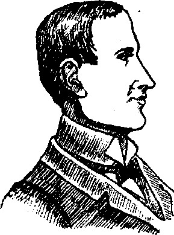
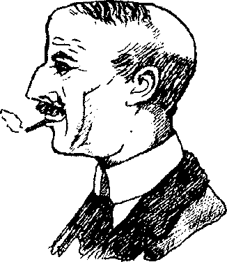
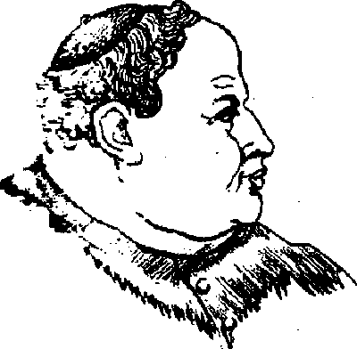
Araştırma Serisi No.13 Yüz Okuma Sanatı
¯¯¯¯¯¯¯¯¯¯¯¯¯¯¯¯¯¯¯¯¯¯¯¯¯¯¯¯¯¯¯¯¯¯ ¯¯¯¯¯¯¯¯¯¯¯¯¯¯¯¯¯¯¯¯¯¯¯¯¯¯¯¯¯¯¯¯¯¯
45
Belirgin çizgilerle ayrılmış ve gelişmiş çene yapısı kişinin irade gücünün, enerjik olmasının bir simgesidir. Dar ve zayıf gelişmiş çene yapısına sahip kişilerin iş
alanında verimsiz olduğuna ve karar verme gücünün zayıf olduğuna işarettir.
Kalın, etli ve belirgin dudaklar zevkli, eğlenceyi seven ve ayrıca güvenilir kişilerin bir özelliğidir. Dar, çok ince dudaklı kişilerin ise kapalı, bazen da güvenilemez bir karaktere sahip olduğuna işarettir.
Kişinin karakter özelliklerinin belirlenmesinde kulaklar yüz yapısında diğer organlara oranla daha büyük önem taşımaktadır. Kulaklar, kişinin beden organlarında doğuştan ölümüne dek şekil değiştirmeyen tek beden uzvu sayılabilir. Yeni doğmuş bebeklerde artık kulağın şekli tam ve belirgin bir nitelik taşıyor. Oysa, burun, ağız, gözler ve ayakların yapısında zaman geçtikçe şekil değişikliği olabiliyor. Bir Fransız antropologu, kişinin kulak yapısının diğer organlara oranla daha büyük önem taşıdığına işaretle, "kulaklar, kişiye yolcuğu için yaratılıştan verilmiş bir pasaport ve mühürdür" demektedir.
Bayanlara oranla erkeklerin fizyognomik incelenmesi daha kolaydır.
B. Resimler
Aşırı uzun yüz
Çökük yüz
Şişman yüz
Kibirli, kendini
Kötü ahlaklı
Maddiyatçı, eğlenceyi
beğenmiş
seven ve rahatına düşkün
__________________________________________________________________
© WWW.MAXIMUMBILGI.COM
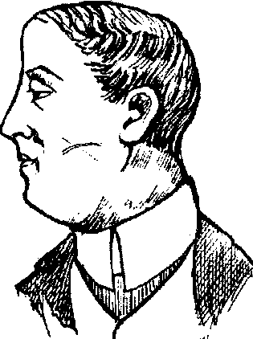
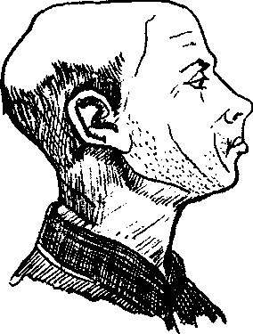
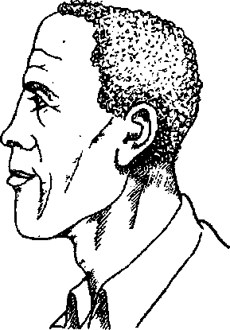
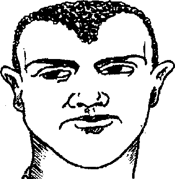
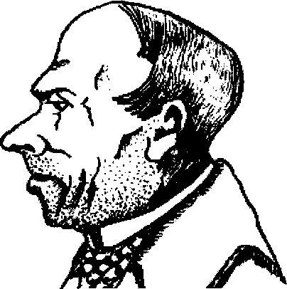
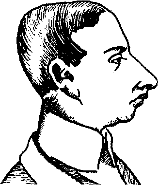
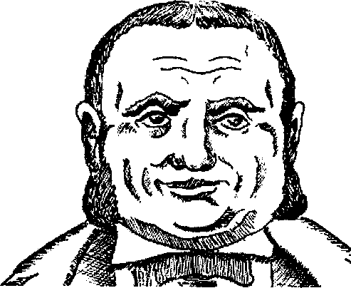
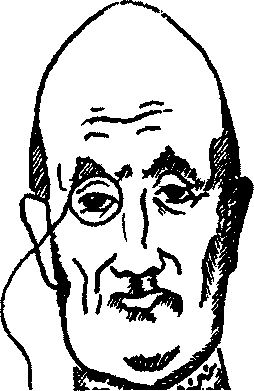
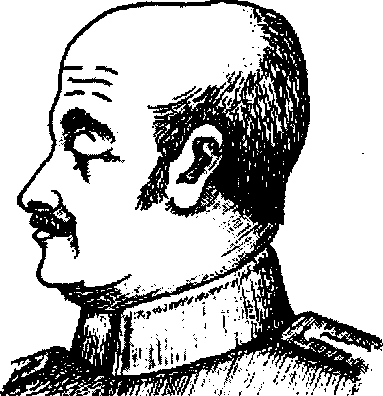
Araştırma Serisi No.13 Yüz Okuma Sanatı
¯¯¯¯¯¯¯¯¯¯¯¯¯¯¯¯¯¯¯¯¯¯¯¯¯¯¯¯¯¯¯¯¯¯ ¯¯¯¯¯¯¯¯¯¯¯¯¯¯¯¯¯¯¯¯¯¯¯¯¯¯¯¯¯¯¯¯¯¯
46
Uzun ve oval yüz
Minyon tip
Aşırı büyük yüz
Aptal, kendini
Hayvani içgüdüleri
Hayvani içgüdüleri
beğenmiş
kuvvetli
kuvvetli
Keskin hatlı yüz
Aşırı kısa yüz, alın üstü
Çene kısmı aşırı küçük ve
çökük ve çökük gözlü
gelişmemiş
Alçak hislere yatkın
Yalancı, kindar ve cimri
Tutarsız, aptal
Balon şekilli yüz
Uzun, sivri çene ve sivri
Aşırı büyük alınlı yüz
kafa (Yumurta kafa)
İyi kalpli, alçak
Tembelliğe yatkın
gönüllü
Yalancı, yaltaklık etmeye
yatkın
__________________________________________________________________
© WWW.MAXIMUMBILGI.COM
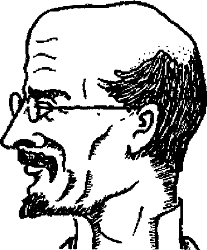
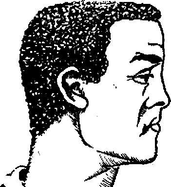
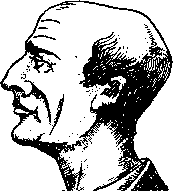
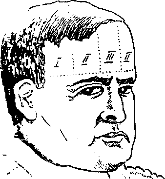
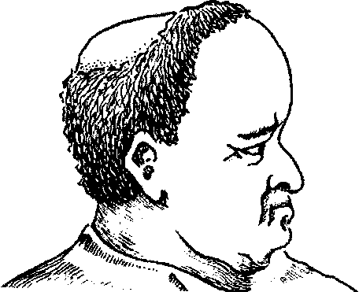
Araştırma Serisi No.13 Yüz Okuma Sanatı
¯¯¯¯¯¯¯¯¯¯¯¯¯¯¯¯¯¯¯¯¯¯¯¯¯¯¯¯¯¯¯¯¯¯ ¯¯¯¯¯¯¯¯¯¯¯¯¯¯¯¯¯¯¯¯¯¯¯¯¯¯¯¯¯¯¯¯¯¯
47
Aşırı küçük alınlı yüz
Kemikli yüz
Düz şekilli yüz
Cimri, çabuk
Çalışmayı seven, ürkek
Ters, başına buyruk ve
sinirlenen
bazen zalim
Zayıf yüz
Alın üç kısma ayrılır. Orta
Aşırı kabarık alın
şerit en büyüğü olup
İhtiyatlı, derin
şekilde III. bölge olarak
Kolayca sinirlenebilen tip
düşünceli
gösterilmiştir. I. bölge
hafıza gücü, II. bölge
düşünme gücü, III. bölge
de kâşiflik yeteneğini
gösterir. Bu kısımlardan
daha kabarık olanı
sözkonusu karakterin
kuvvetli olduğuna işaret
eder.
__________________________________________________________________
© WWW.MAXIMUMBILGI.COM
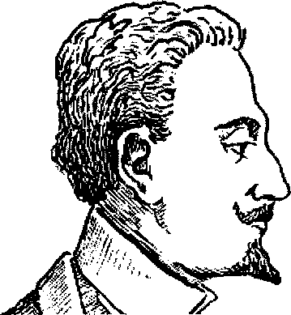
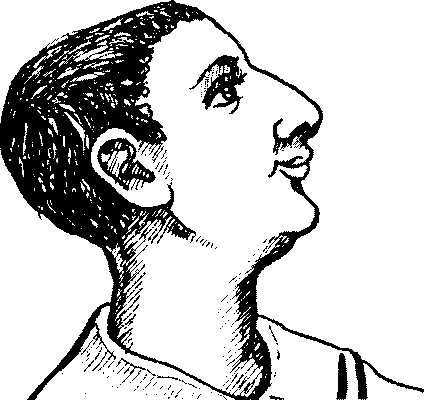
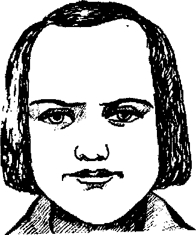
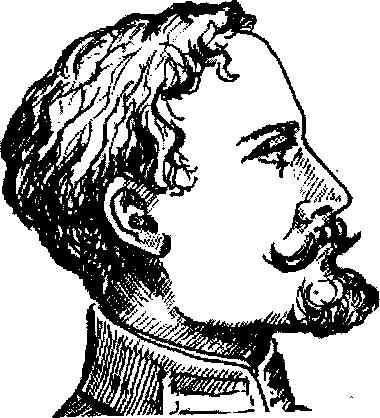
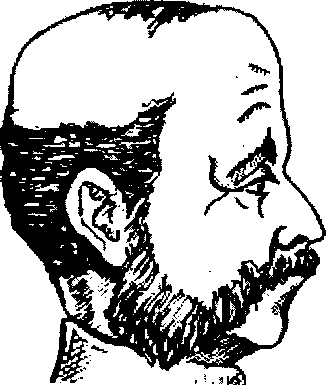
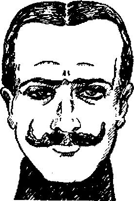
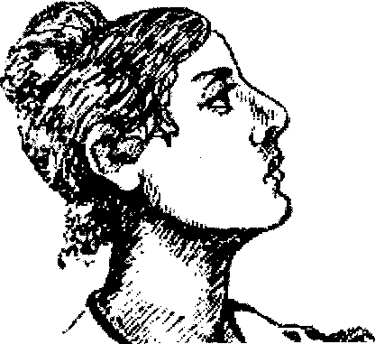
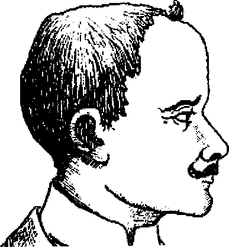
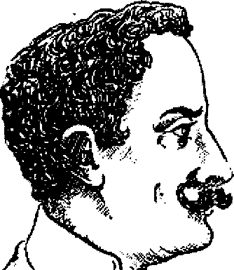
Araştırma Serisi No.13 Yüz Okuma Sanatı
¯¯¯¯¯¯¯¯¯¯¯¯¯¯¯¯¯¯¯¯¯¯¯¯¯¯¯¯¯¯¯¯¯¯ ¯¯¯¯¯¯¯¯¯¯¯¯¯¯¯¯¯¯¯¯¯¯¯¯¯¯¯¯¯¯¯¯¯¯
48
Çökük alın
Ensiz alın
Dörtgen alın
Zorluklara karşı
Aptal
İyi kalpli, alçakgönüllü,
direnci olmayan,
asil
ürkek, korkak
Normal alın
Aşırı enli alın
Gözlerin üzerine doğru
çökük alın
Dengeli, yetenekli
Kibirli, övünmeyi seven
Cesur, enerji dolu
Küçük ve yuvarlak
Yuvarlak alın
Kırışıksız düz alın
alın
Hınçlı, çabuk sinirlenen
Kibarlığa yatkın, dış
Yalancı, kibirli ve
görünüşüne önem veren,
yüzeysel düşünen
süslü
__________________________________________________________________
© WWW.MAXIMUMBILGI.COM
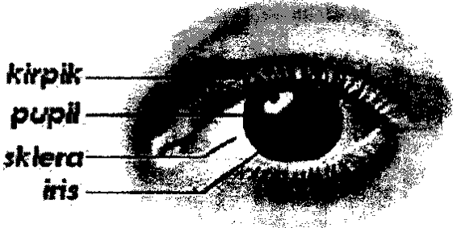
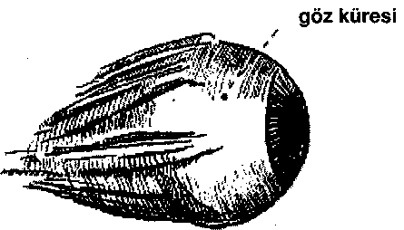
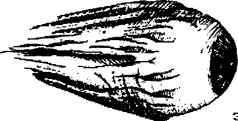
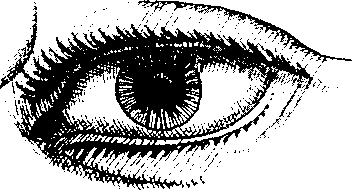
Araştırma Serisi No.13 Yüz Okuma Sanatı
¯¯¯¯¯¯¯¯¯¯¯¯¯¯¯¯¯¯¯¯¯¯¯¯¯¯¯¯¯¯¯¯¯¯ ¯¯¯¯¯¯¯¯¯¯¯¯¯¯¯¯¯¯¯¯¯¯¯¯¯¯¯¯¯¯¯¯¯¯
49
Göz
Temiz ve açık göz küresi
Üzerinde çok belirgin kan
damarları olan göz küresi
Sağlıklı olma belirtisi
Kötü içgüdüleri kuvvetli
¾ Çok hafif kan damarları olan bembeyaz göz küresi: Hassas ¾ İnce kan damarları olan kırmızımsı göz küresi: Sinirli ¾ İnce kan damarları olan ve irisi koyu renkte göz küresi: Ezilmiş
¾ Koyu kahverengi ve koyu mavi: güvenilir, ciddi
¾ Açık gri ve açık mavi: enerji dolu
¾ Siyah: çok çabuk heyecanlanan
¾ koyu gri: cimri
Aşırı küçük iris
Kötü niyetli, hınçlı
__________________________________________________________________
© WWW.MAXIMUMBILGI.COM
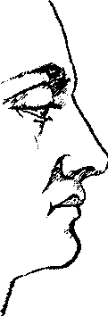
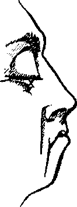
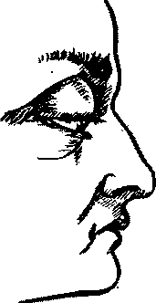
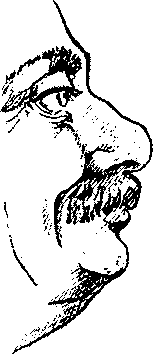
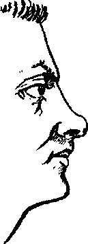
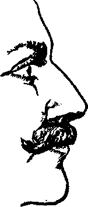
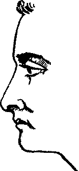
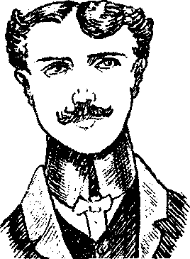

Araştırma Serisi No.13 Yüz Okuma Sanatı
¯¯¯¯¯¯¯¯¯¯¯¯¯¯¯¯¯¯¯¯¯¯¯¯¯¯¯¯¯¯¯¯¯¯ ¯¯¯¯¯¯¯¯¯¯¯¯¯¯¯¯¯¯¯¯¯¯¯¯¯¯¯¯¯¯¯¯¯¯
50
Aşırı büyük kapaklar
İnik (sarkık) üst kapak
Aşırı etli kapaklar
Ciddiyetsiz,
Tembel, vurdumduymaz
Rahatına düşkün
düşünmeden hareket
eden
Sarkık alt kapak
Kırışık kapaklı büyük
Kirpikleri arkaya
gözler
katlanmış kapaklar
Alkole meyilli (ayyaş)
Kötü maddi zevklere
Sağduyulu hareket eden
yatkın
Düz kirpikli kapaklar
Düz kaşlar
Aşağıya doğru inen kaşlar
Açık sözlü, içten,
Rahatına düşkün
Ters, hoşgörüsüz, kendi
samimi
düşüncesinden başka
hiçbir fikri kabullenmeyen
__________________________________________________________________
© WWW.MAXIMUMBILGI.COM
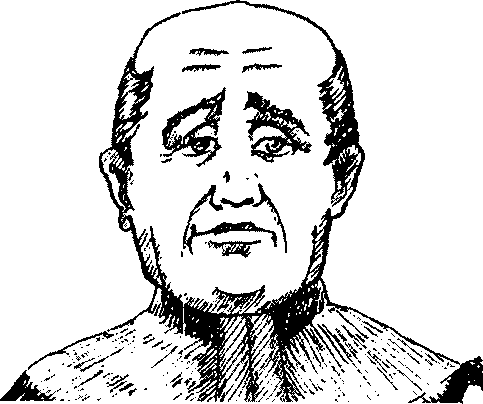
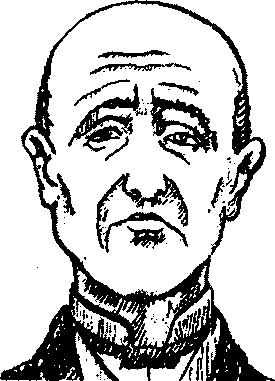
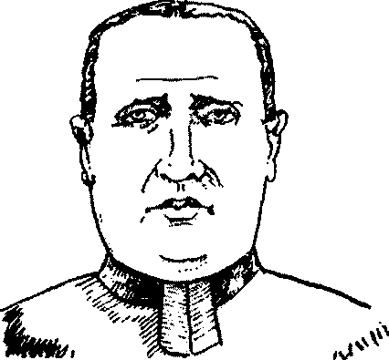
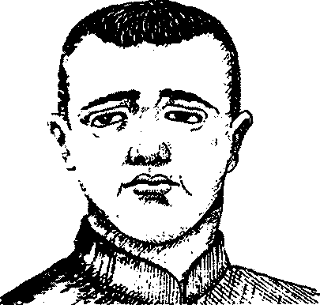
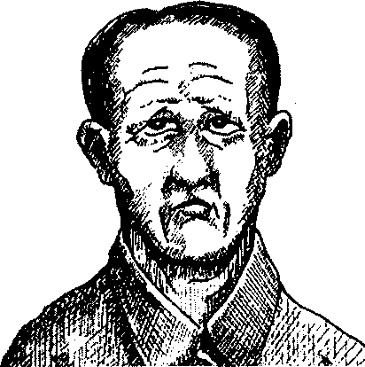
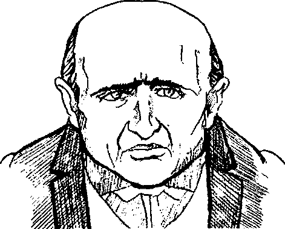
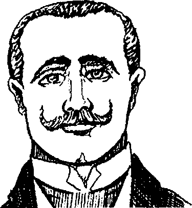
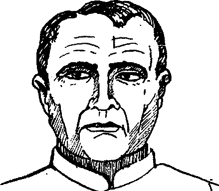
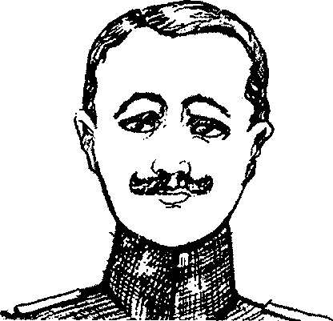
Araştırma Serisi No.13 Yüz Okuma Sanatı
¯¯¯¯¯¯¯¯¯¯¯¯¯¯¯¯¯¯¯¯¯¯¯¯¯¯¯¯¯¯¯¯¯¯ ¯¯¯¯¯¯¯¯¯¯¯¯¯¯¯¯¯¯¯¯¯¯¯¯¯¯¯¯¯¯¯¯¯¯
51
Göz kapaklarına doğru
Göz kapakları üzerine
Kısa kaşlar
eğilmiş kaşlar
kadar inen kaşlar
Sakin karakterli
Yalancı, riyakar
Hasetçi
Kalın, siyah kaşlar
Gelişmemiş kaşlar
Burnun üzerinde birleşen
kaşlar
Dürüst, alçakgönüllü
Hastalıklı
Çabuk sinirlenen, cimri
Kalın, aşağıya doğru
Gözlere yakın, hilal şekilli
Kavisli (hilal), yüksek
kavisli kaşlar
kaşlar
kaşlar
Hayal gücü kuvvetli
Ters, başına buyruk
Hayat aşkıyla dolu, enerji
dolu
__________________________________________________________________
© WWW.MAXIMUMBILGI.COM
Araştırma Serisi No.13 Yüz Okuma Sanatı
¯¯¯¯¯¯¯¯¯¯¯¯¯¯¯¯¯¯¯¯¯¯¯¯¯¯¯¯¯¯¯¯¯¯ ¯¯¯¯¯¯¯¯¯¯¯¯¯¯¯¯¯¯¯¯¯¯¯¯¯¯¯¯¯¯¯¯¯¯
52
Burun
I.
Burun kökü
II.
Ön burun
III.
Burun ucu
IV.
Burun kanatları
V.
Burun delikleri
Normal burun
Sivri burun
Uzun, aşağıya doğru
sarkmış burun
Akıllı, açık sözlü,
Çabuk sinirlenen, meraklı
samimi
Akıllı, adil
Küçük, kısa burun
Büyük, etli burun
Büyük, düz burun
Kibirli, cimri, kötü
Aptal
Dürüst
kalpli
__________________________________________________________________
© WWW.MAXIMUMBILGI.COM
Araştırma Serisi No.13 Yüz Okuma Sanatı
¯¯¯¯¯¯¯¯¯¯¯¯¯¯¯¯¯¯¯¯¯¯¯¯¯¯¯¯¯¯¯¯¯¯ ¯¯¯¯¯¯¯¯¯¯¯¯¯¯¯¯¯¯¯¯¯¯¯¯¯¯¯¯¯¯¯¯¯¯
53
Kavisli, eğri burun
Ortası kabarık, daha
Kambur, şahin burun
sonra basık burun
Çabuk sinirlenen,
Barışçı, cömert, eliaçık
sinirlerine hakim
Açgözlü, aptal, sıradan
olamayan
kişilikli
Sivri uçlu, şahin burun
Az kavisli burun
Alın tarafa çökük burun
Sinirli, bazı
Kibirli, kendini beğenmiş
Dar düşünceli, cimri
durumlarda kötü
kalpli davranan
Küçük, alın tarafında
Büyük delikli uzun burun
Alın tarafında çıkıntılı
aşırı derecede çökük
burun
burun
Eğlenmeyi seven
Hayırsever, cömert
Yalancı, riyakar
__________________________________________________________________
© WWW.MAXIMUMBILGI.COM
Araştırma Serisi No.13 Yüz Okuma Sanatı
¯¯¯¯¯¯¯¯¯¯¯¯¯¯¯¯¯¯¯¯¯¯¯¯¯¯¯¯¯¯¯¯¯¯ ¯¯¯¯¯¯¯¯¯¯¯¯¯¯¯¯¯¯¯¯¯¯¯¯¯¯¯¯¯¯¯¯¯¯
54
Uzun, aynı zamanda
Ucu kırmızı, damarları
Kambur burun
yuvarlak burun
açıkça belirgin burun
Cimri, yalancı
Hırsızlığa yatkın
Aptal, aşırı içkiye düşkün
(ayyaş)
Hiç gelişmemiş burun
Büyük delikler
Uzun, neredeyse ağıza
(bazen doğuştan)
kadar uzamış burun
Neşeli, enerji dolu
Pireyi deve yapan,
Cesur, kahraman
bazen alçak ve
acımasız
Etli ve delikleri tüylü
Küçük ve çember şekilli
Kalkık uçlu burun
burun
delikleri olan burun
Saf, ayrıca kibirli
Sahtekar
İnatçı
__________________________________________________________________
© WWW.MAXIMUMBILGI.COM

Araştırma Serisi No.13 Yüz Okuma Sanatı
¯¯¯¯¯¯¯¯¯¯¯¯¯¯¯¯¯¯¯¯¯¯¯¯¯¯¯¯¯¯¯¯¯¯ ¯¯¯¯¯¯¯¯¯¯¯¯¯¯¯¯¯¯¯¯¯¯¯¯¯¯¯¯¯¯¯¯¯¯
55
Kısa burun
"İkikat burun"
Hassas, çabuk
Çalışkan, gayretli, hevesli
sinirlenen, haddini
bilmeyen
Ağız
I. Üst dudak
II. Alt dudak
III. Ağız köşesi
IV. Ağız yarığı
Kırmızı ve normal şekilli dudaklar sağlıklı
olma belirtisidir. Kansız, mor ve koyu kırmızı
dudaklar hastalık belirtisidir.
__________________________________________________________________
© WWW.MAXIMUMBILGI.COM


Araştırma Serisi No.13 Yüz Okuma Sanatı
¯¯¯¯¯¯¯¯¯¯¯¯¯¯¯¯¯¯¯¯¯¯¯¯¯¯¯¯¯¯¯¯¯¯ ¯¯¯¯¯¯¯¯¯¯¯¯¯¯¯¯¯¯¯¯¯¯¯¯¯¯¯¯¯¯¯¯¯¯
56
İnce, ensiz dudaklar
Küçük, yukarıya doğru
Büyük ve etli dudaklar
kalkık üst dudak
Şan ve şöhret tutkunu
Aptal
Dedikoducu, boş konuşan
Aşırı büyük alt dudak Açık ağız (üst dudak açık)
Birbirine sıkışmış
dudaklar
Tembel
Aptallık
İtici mizaçlı, geçimsiz
Büyük ağız
Kalın, sarkık dudaklar
Üst dudağı sarkık, büyük
ağızlı
Cesur, savaşçı ruhlu
Zevke ve eğlenceye
düşkün
Aptal, açgözlü, kaba
__________________________________________________________________
© WWW.MAXIMUMBILGI.COM
Araştırma Serisi No.13 Yüz Okuma Sanatı
¯¯¯¯¯¯¯¯¯¯¯¯¯¯¯¯¯¯¯¯¯¯¯¯¯¯¯¯¯¯¯¯¯¯ ¯¯¯¯¯¯¯¯¯¯¯¯¯¯¯¯¯¯¯¯¯¯¯¯¯¯¯¯¯¯¯¯¯¯
57
Ensiz, büyük dudaklar
Öne çıkmış alt dudak
(bazen dişler dışarda)
Kendini beğenmiş, kibirli
Hilekâr, yalancı
Çene Yapısı
Aşırı enli, dörtgen
İkiye ayrılmış çene
Keskin uçlu çene
şekilli çene
Kararsız
Çabuk sinirlenen (özellikle
Enerji dolu, kaba,
yan kemikleri geniş olan
acımasız
kişiler)
__________________________________________________________________
© WWW.MAXIMUMBILGI.COM

Araştırma Serisi No.13 Yüz Okuma Sanatı
¯¯¯¯¯¯¯¯¯¯¯¯¯¯¯¯¯¯¯¯¯¯¯¯¯¯¯¯¯¯¯¯¯¯ ¯¯¯¯¯¯¯¯¯¯¯¯¯¯¯¯¯¯¯¯¯¯¯¯¯¯¯¯¯¯¯¯¯¯
58
Yukarı doğru eğik çene
Küçük çene
Aşırı yuvarlar çene
Zevkine düşkün
Kararsız, tereddütlü
Enerji dolu
İleriye doğru çıkmış
Fazla belirgin, net çizgili
Aşırı derecede ileriye
çene
çene
çıkmış çene
İnatçı, ters,
Cesaretli, hayal gücü
Acımasız
hoşgörüsüz
kuvvetli
Kulak
1. Kulak kepçesi,
2. Kulak kepçesi çukuru
3. Kulakçık,